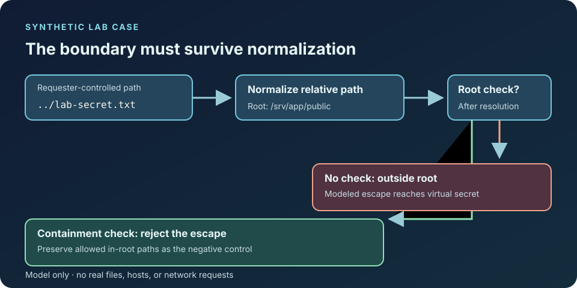

Threat model
State the asset, trust boundary, attacker capability, and assumptions before testing.
SECURITY RESEARCH / AUTHORIZED LABS
This laboratory explores how vulnerabilities emerge, how they can be reproduced safely, and how engineering choices reduce risk. Every interactive tool on this page operates on local, synthetic, user-supplied, or intentionally vulnerable lab data.
Use these tools only with systems you own, isolated laboratories, intentionally vulnerable targets, or environments where you have explicit authorization. The browser tools do not scan the public internet, execute remote exploits, collect credentials, establish persistence, or send analysis data off this page.
METHOD
State the asset, trust boundary, attacker capability, and assumptions before testing.
Use deterministic synthetic inputs or intentionally vulnerable demo code rather than uncontrolled targets.
Connect each finding to concrete remediation, detection, regression tests, and residual limitations.
WORKED CASE / VIRTUAL FILE BOUNDARY
Asset and boundary. A fictional document service permits requests under /srv/app/public; its virtual secret lies outside that root. The modeled actor can supply a relative document path, but has no filesystem or network access in this browser exercise.

../lab-secret.txt outside the allowed directory.index.txt as a negative control.Conclusion supported here: the supplied in-memory resolver model rejects this traversal case after its boundary check. That result alone cannot establish that an unrelated production application is safe.
First, define the authorized virtual root and the document path controlled by the requester. Enter the synthetic parent-directory case in the path-boundary analyzer. The vulnerable resolver normalizes it outside the root; the bounded resolver rejects it. Compare with an allowed in-root path. Preserve the exact input, outputs, and expected result as a regression case. This simulation does not read files or test a live service.
Method references: NIST SP 800-30 Rev. 1, risk assessment and OWASP WSTG, directory traversal testing.
01 / CONTROLLED VULNERABILITY ANALYSIS
Compare an intentionally vulnerable path resolver with a bounded resolver in a virtual in-memory filesystem. No real files are read.
Run ../lab-secret.txt, then index.txt. Capture the normalized virtual path, both resolver decisions, and the expected access boundary. The first is a positive fixture; the second tests that the fix still permits an authorized document. The vulnerable resolver normalizes without re-checking containment; the fixed resolver rejects boundary escapes. A real filesystem also needs symlink and race-condition review. This model reads no host files or network resources. See the worked case and OWASP WSTG.
02 / DETERMINISTIC FUZZING
Mutate a small seed corpus against a local URI-decoding record parser, detect exceptions, and minimize the first failing input.
Use seed 1337 and 300 iterations. Save the seed, iteration count, first failing input, minimized input, and exception class; rerun unchanged settings to check repeatability. Then change the seed to separate a reproducible bug from one particular mutation sequence. A robust parser should handle malformed URI escapes as a controlled validation failure rather than an uncaught exception. The model is a tiny local parser, not coverage-guided native fuzzing, and it executes no external binaries. See OWASP WSTG for broader test planning.
03 / LINUX PRIVILEGE REVIEW
Analyze a synthetic Linux security snapshot for risky permissions, SUID/capabilities, sudo policy, writable PATH components, and exposed secrets.
Load the vulnerable sample and audit it. For each finding, record the modeled path or rule, configured mode/capability, the privileged identity involved, and the change owner. Make a copy of the JSON and remove one risky condition at a time; rerun to check that the corresponding finding clears. Review writable PATH components, SUID necessity, sudo scope, secret permissions, and capabilities against the actual workload before applying a fix. This is supplied-data configuration analysis, not host enumeration; mode strings and rule text are simplified indicators, and a clean report cannot prove a machine secure. Risk framing: NIST SP 800-30 Rev. 1.
04 / ACTIVE DIRECTORY ATTACK/DEFENSE MODEL
Trace authorization relationships in a modeled directory graph and explain the defensive control at each edge.
Load the lab graph and follow the displayed shortest path from the starting principal to the protected group. Record every edge, its delegated right, target, and proposed owner for review. In a copied fixture, remove one unjustified edge and rerun: the path should disappear unless another route exists. A real assessment must verify current ACLs, group nesting, privileged tiering, and change history with authorization. This graph does not query LDAP, request tickets, authenticate, or move between hosts; shortest path does not measure exploitability or likelihood. Use NIST risk assessment guidance for contextual risk decisions.
05 / CONTAINER HARDENING
Score a supplied container configuration for high-risk privilege, namespace, mount, capability, user, and isolation choices.
Load the risky sample and record its privilege, UID, namespace modes, mounts, capabilities, seccomp choice, and read-only-root setting. Copy the JSON; set privileged to false, remove the runtime socket mount and high-impact capabilities, and compare the findings. Treat the numerical score as this page’s heuristic, not a recognized security rating. Validate any proposed change against application needs, runtime policy, image provenance, and host configuration. The tool reads only supplied metadata; it starts no containers and attempts no escape. See OWASP Docker Security Cheat Sheet.
06 / ATTACK-SURFACE DISCOVERY
Turn an imported or user-entered inventory into prioritized exposure findings without performing network discovery.
Run the synthetic inventory and triage internet exposure, management protocols, TLS state, and lifecycle status. Export the report, then identify a service owner and a source of truth for each row. Confirm actual reachability and product versions through an authorized inventory process before prioritizing changes; unknown means evidence is missing, not that a version is vulnerable. The CSV accepts a simplified six-column fixture, not arbitrary quoted CSV. This browser tool opens no sockets or probes hosts. See CISA Cross-Sector Cybersecurity Performance Goals for asset-management context.
REPRODUCIBILITY / SOURCE / TESTS
The tools are deterministic where practical, keep analysis local to the browser, expose the assumptions behind each finding, and separate demonstrated behavior from claims about real systems.
AUTHORED STUDY COMPANION / 3.4
Prerequisites. Input contracts, finite numbers, confusion matrices and authorized defensive testing.
A parser must validate semantics as well as delimiters. This local fixture accepts two nonempty comma-separated fields and a finite numeric reading. It rejects missing fields, extra fields, NaN and infinity. Seeded valid cases and explicitly malformed cases exercise the contract without sending traffic to any host.
A separate fictional login dataset labels four events. Alerting at three failures catches one malicious event, misses another and also flags a benign event. The confusion matrix is [[1,1],[1,1]] with true classes as rows and predictions as columns. An alert is a triage signal under the chosen rule, not a confirmed compromise.
Forty generated valid examples plus six malformed examples do not prove the parser secure against every input. Extend the corpus with size limits, Unicode, encodings and resource constraints appropriate to the actual boundary. Preserve failing inputs and an expected outcome. Defensive evidence should distinguish a synthetic fixture, a reproduced bug, and a result observed in an authorized environment.
| Element | Model | Interpretation |
|---|---|---|
| Parser boundary | Syntax + nonempty fields + finite value | Reject before downstream use |
| Detection | Threshold on a fictional event count | Triage signal |
| Evaluation | Labeled confusion matrix | Expose both kinds of error |
Run seed 7 with 40 valid readings. Expect 40 accepted and all six malformed readings rejected. Confirm one false positive and one false negative in the detection fixture.
Download executable notebooks and source Inspect source ↗
Open security.ipynb in the package. Run cells in order, compare with the reference, then change the stated input. Restart the kernel to reset.
{
"valid_accepted": 40,
"invalid_rejected": 6,
"invalid_total": 6,
"detection_confusion": [
[
1,
1
],
[
1,
1
]
],
"scope": "bounded fictional local parser and labeled detection fixtures; no host scanning"
}This is the recorded result of the included code under the package environment. It is not a live service or device measurement.
Add a maximum input length and an explicit identifier grammar. Keep the new rejection cases as regression fixtures; explain how alert threshold changes trade false positives against misses.
This is an explained self-check, not a certification of mastery.
Reviewed 2026-10-02: this worked example and its explicit assumptions. Source links and notebook results do not establish production or hardware validation.